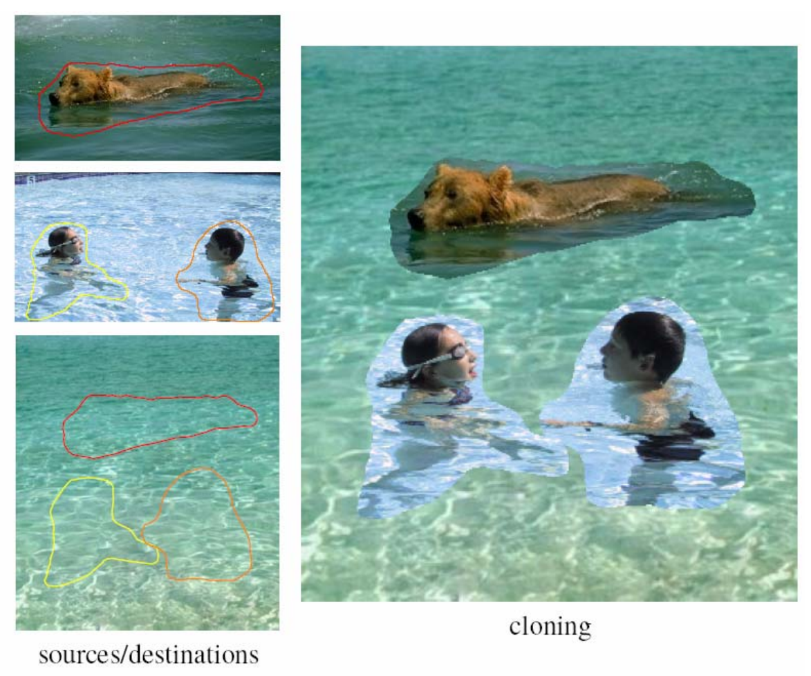
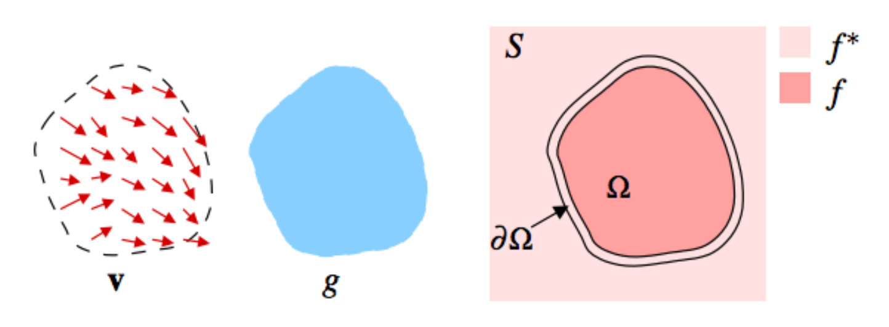
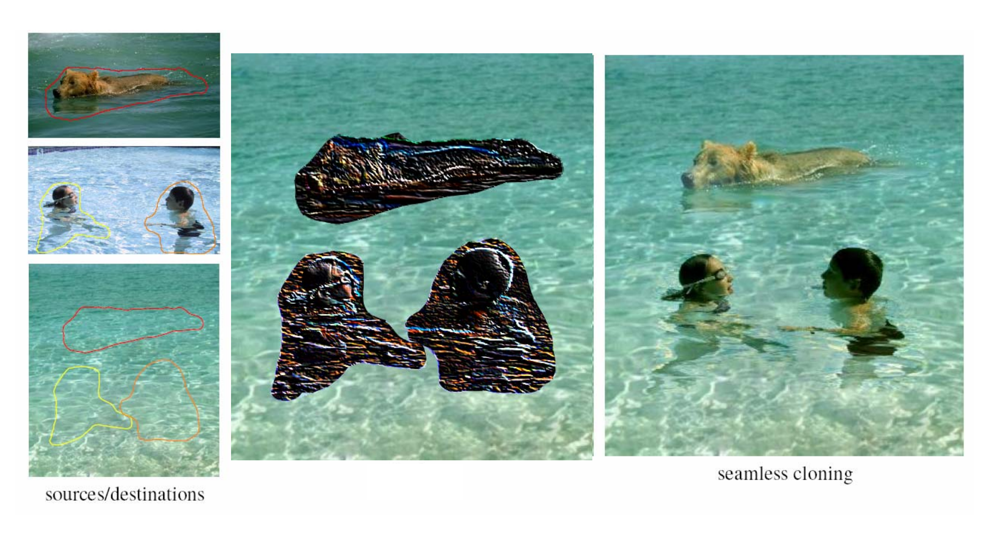

Parallel Poisson Equation Solver
With Applications in Seamless Image Cloning
Casey Fischer and Udaya Malik
Summary
We are going to implement a parallel Poisson Equation solver, to apply to seamless image cloning, in CUDA on the NVIDIA GPUs in the Gates clusters.
Background
Digital compositing is the process of combining multiple images into one final image, with the goal of creating a realistic image. Directly overlaying a foreground image over a background image without further processing often results in unrealistic images due to differences between factors such as the images’ color, lighting, and contrast, as shown in the image below. The goal of seamless image cloning is to allow foreground images to be seamlessly integrated into the background by taking the gradients of the foreground and background images into account, creating a more natural looking composition.
One common method for achieving realistic results is through a method called Poisson blending. Given the image gradient of the foreground, we can determine the new value for a pixel in the background by finding a value that minimizes the difference between the gradient of the new image and the gradient of the background.
The above image shows the general approach of guided interpolation used in Poisson blending, using the following notation: "An unknown function f interpolates the domain Ω the destination function f*, under guidance of vector field v, which might be or not the gradient field of a source function g."
Finding the interpolant function f requires finding the solution to a minimzaiton problem, whose solution is the unique solution of a related Poisson equation with Dirichlet boundary counditions. The solutions to these equations, described in "Poisson Image Editing," are the fundamental basis of Poisson image editing. Three Poisson equations are solved for each of the color channels in each pixel. This technique allows us to create more believable composite images, like the one shown below.
We plan to create a parallel implementation of a Poisson equation solver, which we plan to apply to the problem of seamless image cloning, and potentially other related algorithms. The algorithms commonly used to solve these equations are intrinsically iterative, and thus extremely computationally heavy. As a result, they are only used for smaller images (approximately 60,000 pixels). Speeding up the implementation of the Poisson equation solver will allow us to process images faster, especially for larger images.
Finish this section!!
Image source: "Poisson Image Editing"
Challenges
Our initial and biggest challenge is understanding the algorithm and math behind the Poisson equation solver. Another challenge we foresee is dividing the workload among CUDA threads, depending upon the dependencies that exist between the matrix rows and columns, in an attempt to parallelize the solver. Another challenge we anticipate is dealing with necessary communication between threads in this implementation.
Resources
We plan to study and make use of the algorithms proposed in the following papers.- “Poisson Image Editing” by Patrick Perez, Michael Gangnet, and Andrew Blake (2003)
- "Sparse Matrix Solverson the GPU: Conjugate Gradients and Multigrid" by Jeff Bolz, Ian Farmer, Eitan Grinspun, and Peter Schroder (2003)
Goals & Deliverables
We plan to achieve the following goals by the end of the project:
- A competitive sequential implementation of a Poisson equation solver
- A parallel implementaiton of a Poisson equation solver in CUDA
- An algorithm that applies our solver to seamless image cloning
At the project's end, we plan to be able to show:
- An analysis of the performance the parallel implementation achieved relative to the sequential version
- A collection of images created by the seamless cloning algorithm
Platform Choice
We will be using CUDA for this project as CUDA is essentially built to deal with graphics. We intend to use the GHC45 machine containing an NVIDIA GTX 480 GPU to test our implementation. We chose this machine because the workload for these algorithms deals with only a reasonable number of pixels, which will always be a small subset of the total number pixels in the images. Also, we're interested in seeing the kind of speedup we can achieve by leveraging our knowledge of the GPU architecture.
Schedule
| Week | Plans |
|---|---|
| Apr 1 - 8 | Research and implement serial version of Poisson equation solver |
| Apr 8 - 15 | Research, implement and iterate CUDA implementation of solver |
| Apr 15 - 22 | Debug, refine, and analyze performance of implementations |
| Apr 22 - 29 | Apply Poisson Equation solver to seamless image cloning algorithm |
| Apr 29 - May 5 | Debug and refine. Stretch: Extend to other related image editing algorithms |
| May 5 - 9 | Finalize presentation and write-up |